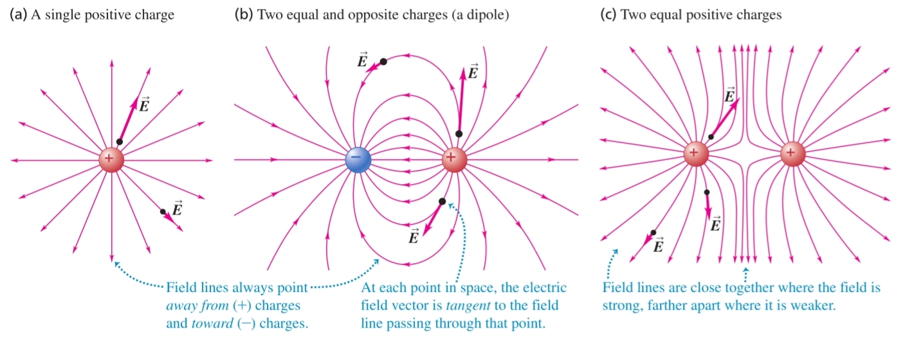
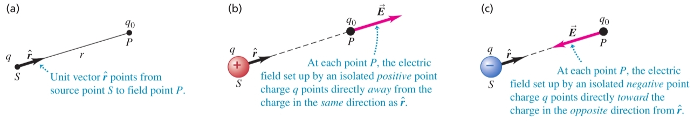

-
Електрично поле - всеки заряд създава електрично поле около себе си
а) силови линии - начин за графично изобразяване на електрично поле
- винаги излизат от положителни заряди
- винаги влизат в отрицателни заряди

-
Интензитет($\vec{E}, [\frac{\text{N}}{\text{C}}]$) - физична величина, характеризираща електричното поле, което заряд $q$ създава в точка с радиус вектор $\vec{r}$ от позицията на заряда
$$\vec{E} = k\frac{q}{r^2}\hat{r}$$

а) принцип на суперпозицията - общият интензитет на електричното поле в дадена точка е равен на векторната сума на интензитетите на всичките електрични полета в тази точка
-
Заряд в електрично поле - върху всеки заряд $q$, намиращ се в електрично поле с интензитет $\vec{E}$, действа сила на електрично взаимодействие
$$\vec{F} = q\vec{E}$$
-
Диелектрична проницаемост на вакуума ($\varepsilon_0, \left[\frac{\text{F}}{\text{m}}\right]$) - величина, характеризираща колко лесно електростатичното поле се разпространява във вакуума $$\varepsilon_0 = \frac{1}{4\pi k} = 8.8541878128(13) \times 10^{-12} \frac{\text{F}}{\text{m}}$$ $$k = \frac{1}{4\pi\varepsilon_0}$$
-
Поток на електрично поле ($\Phi_{\vec{E}}$) - физична величина, пропорционална на броя силови линии, които преминават през дадена повърхност
$$\Phi_{\vec{E}} \overset{\text{def}}{=} \int \vec{E}\cdot d\vec{s}$$
а) закон на Гаус - потокът, минаващ през затворена повърхност, която обгражда заряд, зависи само от обградения заряд
$$\Phi_{\vec{E}} = \oint \vec{E}\cdot d\vec{s} = \frac{q}{\varepsilon_0}$$
-
Електрично поле в и извън някои обекти
а) електрично поле на заредена сфера - има се предвид сфера с постоянна повърхнинна плътност на заряда
- вътре в сферата интензитетът на електричното поле е нула
- извън сферата интензитетът е същият като този, който би се породил, ако целият заряд на сферата беше съсредоточен в нейния център
б) електрично поле на заредено кълбо - има се предвид кълбо с постоянна обемна плътност на заряда
- извън кълбото интензитетът е същият като този, който би се породил, ако целият заряд на кълбото беше съсредоточен в неговия център
- вътре в кълбото интензитетът в даден даден концентричен сферичен участък е същият като този, който би се породил, ако се игнорират външните сферични пластове на кълбото и се вземат предвид само вътрешните за сферичния отрязък такива